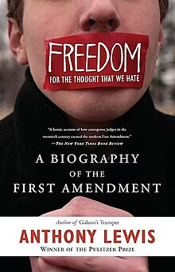

Freedom for the Thought That We Hate
Freedom for the Thought That We Hate: A Biography of the First Amendment é um livro de não-ficção de 2007 do jornalista Anthony Lewis sobre liberdade de expressão, liberdade de imprensa, liberdade de pensamento e a Primeira Emenda da Constituição dos Estados Unidos. O livro começa citando a primeira emenda, que proíbe o congresso norte-americano de criar uma legislação que limita a liberdade de expressão ou de imprensa. Lewis traça a evolução das liberdades civis nos EUA através de eventos históricos importantes. Ele fornece uma visão geral da importante jurisprudência sobre liberdade de expressão, incluindo opiniões da Suprema Corte do país em Schenck vs. United States (1919), Whitney vs. California (1927), United States vs. Schwimmer (1929), New York Times Co vs. Sullivan (1964), e New York Times Co vs. United States (1971).
Freedom for the Thought That We Hate
O título do livro é extraído da opinião divergente do jurista da Suprema Corte, Oliver Wendell Holmes Jr., em United States v. Schwimmer. Holmes escreveu que "se há algum princípio da Constituição que mais, imperativamente, exige apego do que qualquer outro, é o princípio do pensamento livre — não o pensamento livre para aqueles que concordam conosco, mas a liberdade para o pensamento que odiamos".[1] Lewis adverte o leitor contra o potencial do governo de tirar vantagem de períodos de medo e agitação em uma sociedade no período pós ataques de 11 de setembro para suprimir a liberdade de expressão e as críticas dos cidadãos.
O livro foi recebido positivamente pelos revisores de texto, entre eles Jeffrey Rosen do jornal The New York Times; Richard H. Fallon Jr. na Harvard Magazine; Nat Hentoff, dois membros da National Book Critics Circle e Kirkus Reviews. Jeremy Waldron comentou sobre o trabalho para a revista The New York Review of Books, e criticou a postura de Lewis sobre a liberdade de expressão quanto ao discurso de ódio. Waldron elaborou essa crítica em seu livro The Harm in Hate Speech (2012), no qual dedicou um capítulo ao livro de Lewis. Isso levou a uma análise crítica de ambos os trabalhos na The New York Review of Books em junho de 2012 pelo ex-juiz da Suprema Corte John Paul Stevens.